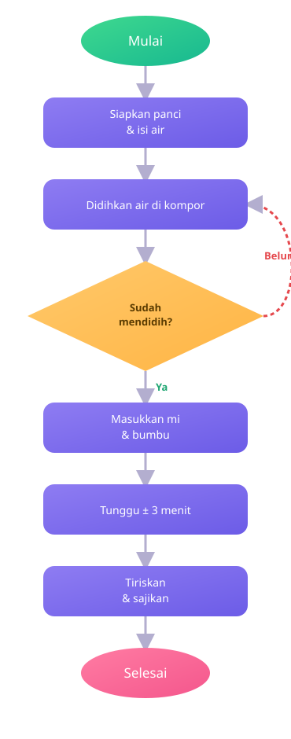
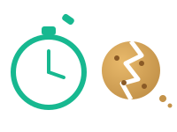
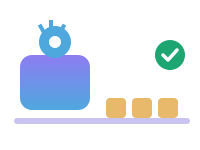
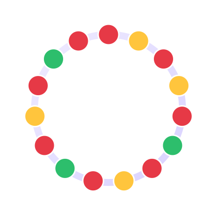

Algoritma: Rahasia di Balik Setiap Langkah!
Pernah kepikiran nggak, kenapa mi instan yang kamu masak bisa selalu enak kalau langkahnya kamu ikuti dengan benar? Nah, di balik itu semua ada yang namanya algoritma. Yuk kita bongkar bareng-bareng!

Sebenarnya, Algoritma itu Apa Sih?
Kata "algoritma" mungkin kedengaran teknis, tapi sebenarnya kamu sudah pakai algoritma hampir setiap hari — cuma nggak sadar aja.
Algoritma adalah kumpulan langkah yang disusun secara urut dan jelas untuk menyelesaikan suatu tugas. Kata kuncinya ada dua: terstruktur (nggak asal-asalan, ada urutannya) dan ada tujuannya. Kadang, dalam algoritma juga ada syarat atau ketentuan yang harus dipatuhi supaya hasilnya sesuai harapan.
Kenapa harus urut?
Coba bayangin kamu disuruh "pakai kaos kaki" tapi urutannya kebalik jadi "pakai sepatu" duluan baru "pakai kaos kaki". Aneh, kan? Dalam algoritma, urutan langkah itu penting banget — kalau ditukar, hasilnya bisa berantakan atau malah gagal total.
Algoritma itu di mana aja
Resep masakan, petunjuk merakit lemari, cara login ke akun game, sampai cara komputer mengurutkan nilai ujian — semuanya pakai algoritma. Bahkan aplikasi favoritmu di HP jalan karena ada algoritma di baliknya!
Yuk, Bedah Algoritma Masak Mi Instan
Ini contoh algoritma paling relate buat anak kos maupun anak rumahan: masak mi instan. Klik tiap kotak di diagram buat lihat penjelasannya!

Perhatikan kotak "Sudah mendidih?" — itu contoh percabangan. Kalau jawabannya "belum", algoritmanya nggak lanjut, tapi balik lagi mendidihkan air dulu. Ini yang bikin algoritma "pintar": dia bisa mengecek kondisi, bukan cuma jalan lurus terus.
Coba pikirkan: apa yang terjadi kalau langkah "masukkan mi" dan "didihkan air" ditukar urutannya? Mi-nya bakal matang sempurna nggak, ya?
Algoritma Sering Punya "Aturan Main"
Nggak semua algoritma jalan lurus aja. Banyak yang punya syarat atau ketentuan tertentu yang harus dipenuhi dulu sebelum langkah berikutnya boleh dijalankan. Ini beberapa contoh yang mungkin pernah kamu alami.
Syarat Naik Wahana
Beberapa wahana di taman bermain punya papan syarat "tinggi badan minimal 120 cm". Kalau kamu belum memenuhi syarat itu, algoritma "boleh naik wahana"-nya berhenti duluan — nggak lanjut ke "silakan naik".
Syarat Ikut Lomba
Panitia lomba futsal antar kelas mungkin bikin syarat "peserta harus kelas VII" dan "daftar sebelum tanggal X". Kalau salah satu syarat nggak terpenuhi, langkah "ikut bertanding" jadi nggak bisa dijalankan.
Jadi, pola dalam algoritma adalah cara langkah-langkah itu tersusun (misalnya berurutan, atau berulang), sedangkan syarat adalah kondisi yang menentukan apakah suatu langkah boleh dijalankan atau tidak. Dua hal ini yang bikin algoritma bisa "mikir", bukan cuma jalan lurus.
Algoritma yang Bagus itu Efisien & Efektif
Dua kata ini sering ketuker, padahal beda maknanya lho. Menurut KBBI kurang lebih begini:

Efisien = hemat waktu, tenaga, dan biaya. Contohnya motong biskuit pakai tangan: cepat dan nggak butuh alat mahal, tapi hasil potongannya belum tentu rapi dan seragam.

Efektif = berhasil mencapai tujuan yang diinginkan. Contohnya mesin pabrik: butuh waktu & biaya lebih besar untuk dibangun, tapi hasilnya seragam dan sesuai standar — tujuannya benar-benar tercapai.
Algoritma yang paling ideal itu yang efisien sekaligus efektif — hemat sumber daya, tapi tetap berhasil mencapai tujuan dengan hasil yang sesuai harapan.
Gelang Warna-Warni Kirana
Kirana lagi bikin gelang manik-manik yang dipakai melingkar di pergelangan tangan. Ini bahan-bahannya:

Aturannya Kirana
Manik dengan warna yang sama nggak boleh bersebelahan. Dan karena gelangnya melingkar (nggak ada ujung dan pangkal), manik yang paling awal dan paling akhir juga dianggap bersebelahan satu sama lain!
🤔 Coba Pikir Dulu
Kalau ditanya "berapa banyak manik yang dipakai Kirana untuk membuat satu gelang?", banyak yang langsung jawab "15" — soalnya 8 + 4 + 3 = 15.
Tapi tunggu dulu... itu jawaban yang agak buru-buru. Pertanyaan sebenarnya bukan cuma soal jumlah total, tapi apakah 15 manik itu bisa disusun melingkar sesuai aturan Kirana (warna sama nggak boleh nempel, termasuk manik awal & akhir).
Tips Menyusun Algoritma yang Baik
Mau bikin algoritmamu sendiri? Ini beberapa hal yang bisa kamu ingat.
Tentukan tujuan akhirnya dulu
Sebelum nulis langkah, pastikan kamu tahu persis apa hasil akhir yang ingin dicapai.
Susun langkah secara urut
Jangan loncat-loncat. Satu langkah harus jelas jadi dasar buat langkah berikutnya.
Buat langkah yang jelas & nggak ambigu
Setiap langkah harus bisa dikerjakan tanpa nebak-nebak maksudnya apa.
Pikirkan syarat/kemungkinan lain
Kondisi khusus (seperti "kalau belum mendidih") perlu diantisipasi dari awal.
Coba jalankan di kepala dulu
Sebelum dipakai beneran, bayangkan algoritmamu dijalankan langkah demi langkah — cek apakah hasilnya masuk akal.
Sederhana itu lebih baik
Kalau ada cara yang lebih singkat tapi tetap mencapai tujuan, itu artinya algoritmamu makin efisien.
Kuis Singkat: Algoritma
Skor: 0/5Klik salah satu jawaban di tiap soal, nanti langsung kelihatan benar atau salahnya beserta penjelasan singkat.